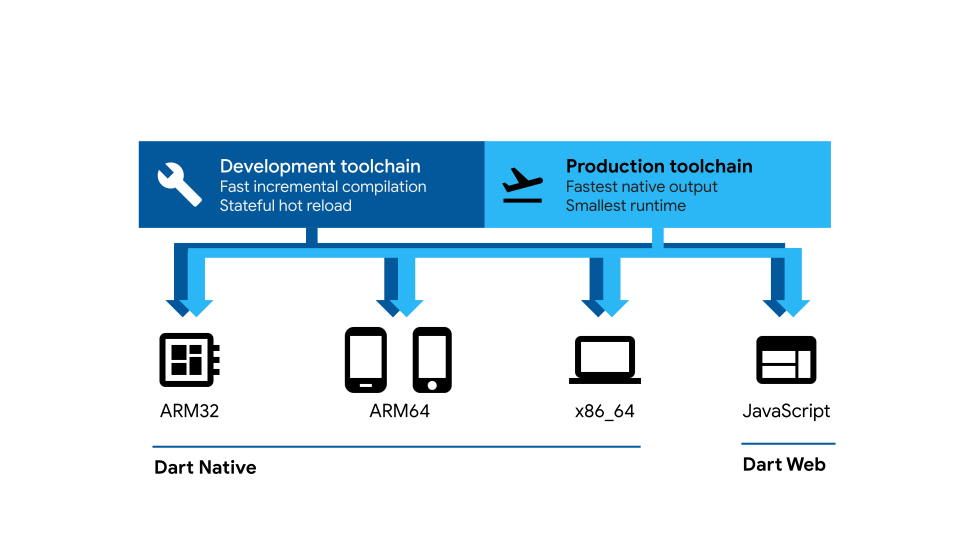

Dart SDK is a software Development kit (SDK) which provides programming library to be used to develop programs in the Dart environment. Dart SDK is a client-optimized language for fast apps on any platform.

Dart supports development for native mobile and desktop devices and the Web.
What you will learn in this codelab:
This step covers the major Dart language features from variables and operations to classes and libraries.
Every programm has a main entry point called main. This is the main method in which the operating system is dispatched to when the operating system loads the program into its memory space and starts executing the program. In the example below, the main method defines a variable number and assigned the value of 42 and call a function printInteger with a function parameter. The output of this program is the text - The number is 42.
// Define a function.
void printInteger(int aNumber) {
print('The number is $aNumber.'); // Print to console.
}
// This is where the app starts executing.
void main() {
var number = 42; // Declare and initialize a variable.
printInteger(number); // Call a function.
}
Open a browser, and navigate to the URL - dartpad.dev.
Essentially, you have just created a console program to print a line onto the console. Refer to this link A Basic Program for details.
Every programming languages have their primitive types. A type defines the data types of a programming languages. In Dart, every data type is an object. An object is an instance of a class. Dart's primitive types are integer, float, boolean, and strings. There are other data types such as collection. Collection is a data type containers like list.
Like other programming language, Dart has a list of keywords. Dart treats the keywords specially. Dart Keywords Take a moment to familiarize yourself with some of these keywords. You will learn some of these keywords as you are learning throughout these sessions.
A variable is used to declare a type for storing the data. A example of declaring a variale is the following. The statement declared the variable name and initialized its value to ‘Bob'. This variable define the string type variable.
var name = 'Bob';
Read the explaination of Dart variable.
A class models a specific real world object. For example, the class Cat model a cat. A cat can eat, meow, walk and sense. All of these are operations of a class. The class can have properties. In the class Cat, it has the property of color. The color of the cat's hair.
Read the explaination of Dart class.
Work on an exercise to create a class in DartPad. Think of a real world object and model its behaviors and properties in a class. After the class is defined, declare the class and create an instance of this class. In your main program, call the class's method and print its output.
Controlling program flow are common programming syntaxes to direct the flow of a programm. The flow of program can be controlled by conditions. Conditions are specific states within a program. Like any other languages, Dart also has a lost control flow statements that we can use to control the flow of a program.
Read the explaination of Dart control flow.
Exercise:
Write a program to print the even integers from the follow list.
1,4,6,7,9,2,12,26,99